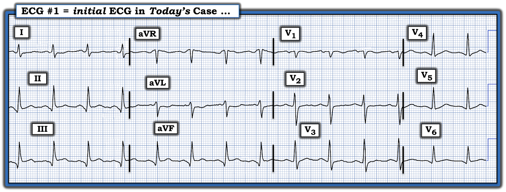
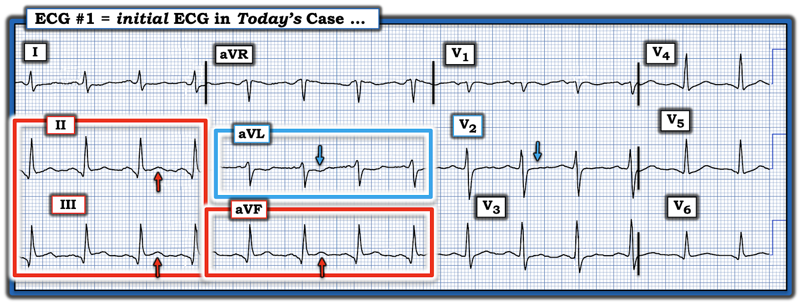
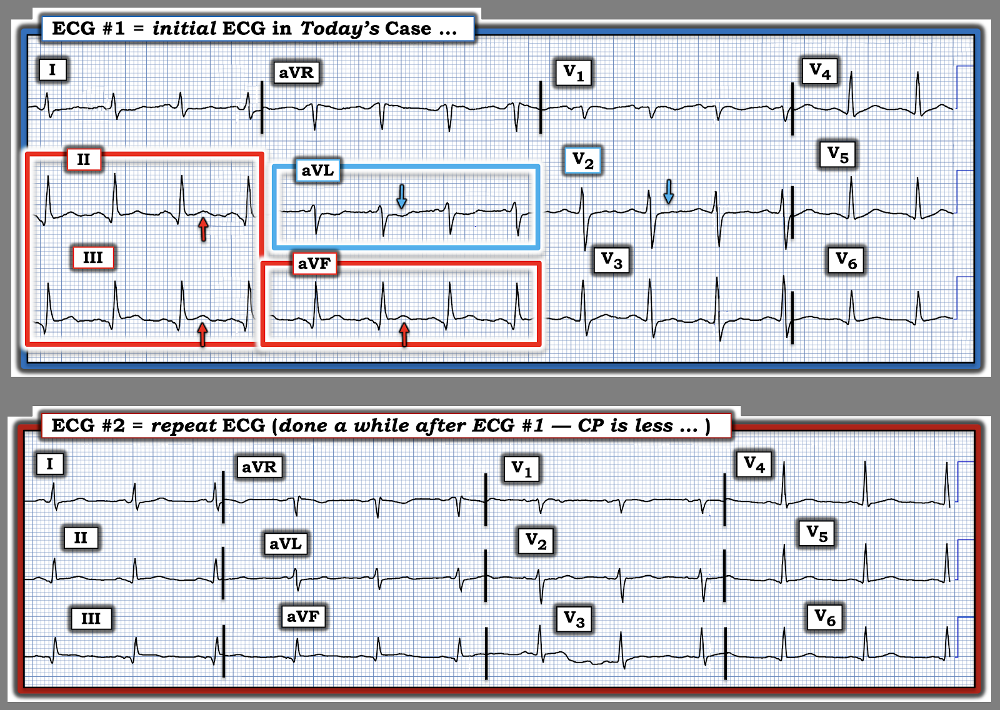

ECG Blog #512 — Những chi tiết quan trọng ...
Điện tâm đồ trong Hình 1 được ghi từ một người bệnh trung niên — đến viện trong tình trạng "bệnh cấp tính nặng" do nhiễm khuẩn huyết — nhưng không đau ngực.
- Bạn sẽ diễn giải điện tâm đồ này như thế nào?
- Bạn có nên kích hoạt phòng thông tim (cath lab) không?
- Nếu không — Tại sao không?


SUY NGHĨ CỦA TÔI về CA BỆNH này:
Nhịp xoang, tần số ngay dưới 100/phút (tức là, khoảng R-R dài hơn 3 ô lớn một chút). Các khoảng (PR,QRS,QTc) và trục có vẻ bình thường. Không lớn buồng tim.
Về Thay đổi Q-R-S-T:
- Sóng Q — thấy ở cả ba chuyển đạo thành dưới. Ít nhất ở chuyển đạo III — sóng Q trông hơi rộng hơn mức thường gặp (gợi ý đây có thể là một "sóng Q nhồi máu" do một cơn nhồi máu cơ tim (MI) đã xảy ra vào một thời điểm nào đó).
- Tăng tiến sóng R — Sóng R ở chuyển đạo V2 trông hơi cao hơn mức thường thấy ở chuyển đạo này. Dù vậy, điểm chuyển tiếp (tức là, nơi sóng R trở nên cao hơn độ sâu của sóng S) — vẫn bình thường (ở đây xảy ra giữa chuyển đạo V2 và V3).
Về Thay đổi sóng ST-T:
- Cả 3 chuyển đạo thành dưới (thấy trong Hình 2, nằm trong các hình chữ nhật MÀU ĐỎ) — đều cho thấy ST chênh lên nhẹ-nhưng-thật, kèm ST thẳng đuỗn ở chuyển đạo II và III.
- ĐIỂM THEN CHỐT (PEARL) #1: Nếu xem riêng lẻ — sẽ khó biết liệu các sóng Q và ST chênh lên nhẹ-nhưng-thật mà ta thấy ở các chuyển đạo II,III,aVF có phản ánh một OMI cấp (hoặc mới xảy ra) hay không, nhất là khi người bệnh không có CP (đau ngực — Chest Pain). Nhưng trong bối cảnh của chuyển đạo aVL (vốn biểu hiện hình ảnh soi gương ngược chiều gần như hoàn hảo so với những gì ta thấy ở chuyển đạo III) — ta buộc phải ít nhất nghĩ tới một biến cố mới hoặc cấp tính cho đến khi chứng minh được điều ngược lại (Lưu ý ST chênh xuống nhẹ kèm phần cuối sóng T dương nằm trong hình chữ nhật MÀU XANH ở Hình 2).
- Điểm MẤU CHỐT: Như đã trình bày trong ECG Blog #171 — Blog #158 và Blog #474 (cùng nhiều bài khác) — một trong những manh mối hữu ích nhất để xác định ST chênh lên kín đáo ở các chuyển đạo thành dưới có phản ánh OMI cấp hoặc mới xảy ra hay không — là sự hiện diện của hình ảnh ST-T soi gương ngược chiều giữa chuyển đạo III và aVL. Tôi thấy mối liên hệ soi gương (reciprocal) này gần như "thần kỳ" về độ tin cậy trong việc gợi ý một OMI cấp (nhồi máu cơ tim do tắc — Occlusion-based Myocardial Infarction) — dựa trên vị trí giải phẫu gần như đối nhau trên mặt phẳng trán của chuyển đạo III (ở +120 độ) và chuyển đạo aVL (ở -30 độ).


========================
- LƯU Ý #1: Xem PHẦN BỔ SUNG của tôi ở bên dưới để ôn lại khái niệm thế nào là một "OMI" (so với khái niệm lỗi thời của những bác sĩ lâm sàng còn "mắc kẹt" ở việc khăng khăng đòi đủ tiêu chuẩn STEMI rồi mới cân nhắc điều trị tiêu sợi huyết hoặc thông tim kèm PCI).
- LƯU Ý #2: Trong ca hôm nay — việc đánh giá có đạt tiêu chuẩn STEMI hay không là khó (tức là, xem ST có chênh lên ≥1 mm ở ít nhất 2 chuyển đạo thành dưới hay không). Đó là vì có đoạn PR chênh xuống ở các chuyển đạo thành dưới trong Hình 2. Về mặt lâm sàng, điều này không quan trọng — vì điều thực sự có ý nghĩa là có tắc động mạch vành cấp hay không — và ĐIỂM THEN CHỐT #1 và 2 gợi ý rằng có OMI bất kể tiêu chuẩn STEMI có được thỏa mãn hay không!
========================
ĐIỂM THEN CHỐT #2: Bằng chứng ủng hộ thêm cho mối lo ngại của chúng ta về một OMI thành dưới cấp đang diễn ra — đến từ hình dạng của chuyển đạo V2 (mũi tên MÀU XANH ở chuyển đạo này trong Hình 2).
- Vì ở phần lớn người bệnh, thành dưới và thành sau thất trái có chung nguồn cấp máu — nên việc thấy dấu hiệu gợi ý OMI thành sau cấp sẽ củng cố thêm rằng những dấu hiệu chưa chắc chắn ở các chuyển đạo chi nhiều khả năng là "thật".
- Đây chính xác là điều ta thấy trong Hình 2. Như thường được nhấn mạnh trong ECG Blog này — bình thường có ST chênh lên nhẹ, dốc lên ở chuyển đạo V2 và V3. Tuy nhiên, mũi tên MÀU XANH ở chuyển đạo V2 làm nổi bật ST-T dẹt kèm ST chênh xuống nhẹ ở chuyển đạo này, rõ ràng là bất thường.
- Điểm MẤU CHỐT: Khi nghi ngờ OMI thành dưới — sự hiện diện của ST chênh xuống tối đa ở các chuyển đạo V2, V3 và/hoặc V4 gợi ý kèm theo OMI thành sau. Và trong ca hôm nay — chính ST-T dẹt và chênh xuống ở chuyển đạo V2 cho ta biết phải coi ST chênh lên ở các chuyển đạo thành dưới là mới xảy ra cho đến khi chứng minh được điều ngược lại.
- ĐIỂM THEN CHỐT #3: Ngoài OMI dưới-sau mới xảy ra đã nghi ngờ — còn có thể có tổn thương thất phải (RV involvement) trong Hình 2. Đó là vì, thay vì chênh xuống — đoạn ST ở chuyển đạo V1 có dạng vòm (coving) và hoàn toàn không chênh xuống (như lẽ ra phải thấy khi có OMI thành sau).
- Nếu đồng thời có OMI thành sau và tổn thương thất phải cấp — thì ST chênh lên ở chuyển đạo V1 — một chuyển đạo bên phải — do nhồi máu thất phải (RV MI) có thể làm giảm mức ST chênh xuống mà lẽ ra ta sẽ thấy ở chuyển đạo V1 do OMI thành sau. Vì lý do này — lý tưởng ra nên ghi một điện tâm đồ với các chuyển đạo trước ngực bên phải vì đó là cách tốt nhất để nhanh chóng xác định có (hay không có) tổn thương thất phải (Xem ECG Blog #190 để biết thêm về nhận diện trên điện tâm đồ và các vấn đề xử trí liên quan đến tổn thương thất phải cấp).
- ĐIỂM THEN CHỐT #4: Không chỉ ST-T dẹt và chênh xuống mà ta thấy ở chuyển đạo V2 — các chuyển đạo còn lại trong Hình 2 cũng bất thường (tức là, các chuyển đạo I; V3,V4,V5,V6 đều có ST-T dẹt và/hoặc không có sóng T dương rõ). Trong bối cảnh nghi ngờ OMI dưới-sau mới xảy ra hoặc cấp tính — những thay đổi ST-T không đặc hiệu này gợi ý rằng ngoài biến cố cấp, người bệnh có thể còn có bệnh nhiều nhánh mạch vành nền đáng kể.
Nhận định lâm sàng CỦA TÔI: Đây là một ca khó — rõ ràng bị phức tạp hóa bởi các yếu tố sau: i) Người bệnh đang bệnh cấp tính nặng do nhiễm khuẩn huyết; — và, ii) Người bệnh không đau ngực! Dù vậy — suy nghĩ của tôi khi nhận được ca này như sau:
- Nhiều khả năng nhất là đã có một OMI dưới-sau mới xảy ra. Đây có phải là một biến cố cấp đang diễn ra hay không thì không thể xác định chỉ từ một điện tâm đồ duy nhất này khi không có thêm thông tin lâm sàng (tức là, bệnh sử đầy đủ hơn; so sánh với một điện tâm đồ "nền" trước đó để xem các thay đổi điện tâm đồ mô tả ở trên có "mới" hay không; troponin nhiều lần; siêu âm tim tại giường tìm rối loạn vận động thành khu trú; v.v.).
- Lý tưởng ra nên ghi các chuyển đạo trước ngực bên phải để đánh giá khả năng kèm nhồi máu thất phải.
- Ngoài bất kỳ biến cố cấp nào — người bệnh này có thể có bệnh nhiều nhánh mạch vành với kiểu tuần hoàn bàng hệ chưa rõ.
- Thông tim (càng sớm càng tốt) có thể cần thiết để xác định có biến cố cấp đang diễn ra hay không. Dù vậy — thời điểm thông tim bị phức tạp hóa bởi bệnh cấp tính khác của người bệnh ( = nhiễm khuẩn huyết). Lý tưởng là phải đạt được ít nhất một mức độ ổn định nào đó trước khi bắt đầu tính đến can thiệp cấp cho OMI được cho là có ở người bệnh này. Phải thừa nhận — xác định thời điểm tối ưu để can thiệp là một màn "tung hứng" .
========================
CA BỆNH TIẾP DIỄN:
- Người bệnh đáp ứng tốt với điều trị ban đầu cho nhiễm khuẩn huyết.
- Khai thác thêm bệnh sử — cho thấy người bệnh thực sự có đau ngực trước khi đến viện!
- Troponin ban đầu tăng vừa phải.
- Như trong Hình 3 — một điện tâm đồ ghi lại đã được thực hiện. Mức CP của người bệnh đã "giảm" vào thời điểm ghi điện tâm đồ này.
CÂU HỎI về Hình 3:
- Bạn sẽ diễn giải điện tâm đồ ghi lại như thế nào?
- Hình 3 có xác nhận chẩn đoán OMI cấp không?


========================
CÂU TRẢ LỜI CỦA TÔI:
Về mặt lâm sàng, cách hữu ích nhất để diễn giải điện tâm đồ ghi lại ở phía dưới trong Hình 3 — là so sánh bản ghi này với điện tâm đồ ban đầu của ca hôm nay.
- Trước hết — hãy để ý việc so sánh các điện tâm đồ liên tiếp dễ dàng hơn biết bao khi 2 bản ghi bạn đang xem được đặt cạnh nhau (như trong Hình 3).
- Ấn tượng chung của tôi — là điện tâm đồ ghi lại rõ ràng đã cải thiện so với điện tâm đồ ban đầu nằm ở phía trên Hình 3.
- Đáng lưu ý — biên độ QRS giảm ở nhiều chuyển đạo trên điện tâm đồ ghi lại. Ý nghĩa của điều này chưa rõ. Tuy nhiên, trục mặt phẳng trán và tăng tiến sóng R ở các chuyển đạo trước ngực tương tự nhau trên cả hai bản ghi — nên việc so sánh từng chuyển đạo một vẫn có giá trị.
- Khi đã tính đến biên độ QRS giảm trên điện tâm đồ #2 — ST chênh lên ít hơn ở từng chuyển đạo thành dưới, và ST chênh xuống soi gương từng thấy ở chuyển đạo aVL (và ở mức độ ít hơn ở chuyển đạo I) trên điện tâm đồ ban đầu nay không còn nữa.
- Ở các chuyển đạo trước ngực — ST dạng vòm ở chuyển đạo V1 ít hơn.
- Không còn thấy ST chênh xuống ở chuyển đạo V2, nay sóng T ở chuyển đạo này đã phần nào xuất hiện trở lại.
- ST-T ở các chuyển đạo trước ngực bên nay trông ít bất thường hơn.
ĐIỀU CỐT LÕI: Troponin tăng vừa phải xác nhận có nhồi máu. Với mức độ CP của người bệnh giảm đi, đi kèm với sự cải thiện kín đáo-nhưng-thật của hình ảnh ST-T như mô tả ở trên — tôi diễn giải điện tâm đồ ghi lại trong Hình 3 là gợi ý thay đổi ST-T "động" (dynamic) , càng củng cố thêm cho một biến cố cấp đang tiến triển.
- Thông tim đã được thực hiện — và phát hiện bệnh ba nhánh mạch vành nặng!
- Đáng tiếc là tôi không có thêm chi tiết về diễn tiến sau đó.
========================
ĐIỂM THEN CHỐT CUỐI CÙNG (PEARL):
Xác định điều gì đã xảy ra vào lúc nào đối với tắc động mạch vành cấp thì cùng lắm cũng là một thử thách — và gần như không thể làm được nếu không có ghi chép kịp thời trong suốt quá trình diễn biến.
- Theo kinh nghiệm của tôi — mối tương quan giữa sự hiện diện và mức độ tương đối của CP với thời điểm ghi từng điện tâm đồ — hiếm khi xác định được bằng cách hồi cứu hồ sơ bệnh án.
- Dù vậy — Chẳng phải sẽ rất DỄ DÀNG để ghi lại mối tương quan giữa mức độ CP với từng điện tâm đồ liên tiếp nếu việc này được làm ngay lúc người bệnh đang được đánh giá tại khoa cấp cứu (ED) sao? (tức là, nhân viên y tế chỉ cần viết TRỰC TIẾP lên từng bản điện tâm đồ thật [cũng như trong hồ sơ] mức độ CP tại thời điểm ghi mỗi điện tâm đồ).
- Làm như vậy sẽ cho chúng ta một "câu chuyện" — mà từ đó ta có thể ghép lại thành bệnh cảnh lâm sàng hợp lý nhất (cho ta biết mạch máu "thủ phạm" đang mở hay đang tắc tại thời điểm ghi mỗi bản ghi).
- Làm như vậy cũng sẽ giúp ta nhận ra giai đoạn "giả bình thường hóa" có thể xảy ra sau tái tưới máu tự phát kèm giảm CP (tức là, có thể chỉ thấy rất ít hoặc không thấy bất thường điện tâm đồ nào nếu bản ghi ban đầu rơi vào khoảng giữa giai đoạn ST chênh lên và giai đoạn sóng T đảo ngược do tái tưới máu).
- Ví dụ, trong ca hôm nay — biết rằng CP của người bệnh đã giảm vào thời điểm ghi điện tâm đồ ghi lại giúp ta nhận ra rằng những cải thiện tương đối khiêm tốn trên điện tâm đồ là phù hợp với thay đổi ST-T "động".
==================================
Lời cảm ơn: Xin cảm ơn người đã gửi ẩn danh ca bệnh hôm nay.
==================================

==================================
PHẦN BỔ SUNG (ngày 3 tháng 1 năm 2026):
Để tìm hiểu thêm về khái niệm và cách đọc điện tâm đồ của OMI (không thỏa mãn tiêu chuẩn STEMI dựa trên milimét):
- Xem ECG Blog #337 — bài điểm lại một ca bệnh, tập trung vào việc phân biệt "NSTEMI" với OMI.
- Tham khảo 2 Audio Pearl ở cuối trang này.
- Tham khảo Hình 4 — điểm lại một số dấu hiệu điện tâm đồ cần tìm khi bạn nghi ngờ một OMI cấp ở người bệnh không thỏa mãn tiêu chuẩn STEMI dựa trên milimét mà tôi điểm lại bên dưới Hình này.

= = = = =
Lưu ý MẤU CHỐT #1: Khăng khăng đòi thỏa mãn tiêu chuẩn STEMI dựa trên milimét rồi mới cân nhắc thông tim kèm PCI kịp thời (hoặc điều trị tiêu sợi huyết khi không có khả năng thông tim 24/7) — sẽ bỏ sót ít nhất 1/3 tổng số ca tắc động mạch vành cấp. Ở người bệnh có CP mới — chú ý đến các dấu hiệu điện tâm đồ trong Hình 4 có thể giúp bạn nhận diện những người bệnh có OMI cấp dù không đạt tiêu chuẩn STEMI.
= = = = =
Lưu ý MẤU CHỐT #2: Lượng cơ tim còn sống có thể bị mất thực ra lớn hơn nhiều so với mức hàm ý trong Lưu ý #1 — vì ngay cả ở những người bệnh mà cuối cùng "STEMI" có được nhận ra — do phải chờ cho đến khi tiêu chuẩn dựa trên milimét cuối cùng được thỏa mãn, nên điều trị tái tưới máu cần thiết (PCI hoặc tiêu sợi huyết) quá thường xuyên bị trì hoãn (thường là nhiều giờ!). Thời gian là yếu tố sống còn! — vì lợi ích cứu cơ tim tiềm năng lớn nhất đạt được khi điều trị tái tưới máu được thực hiện trong vòng vài giờ đầu! (kèm theo lời tiên tri tự ứng nghiệm rằng "mô hình STEMI" lỗi thời và kém cỏi cứ tiếp tục được duy trì trong y văn — vì dữ liệu sẽ ghi nhận rằng PCI được thực hiện "trong vòng vài phút" kể từ khi có ST chênh lên đạt tiêu chuẩn STEMI [bỏ qua thực tế lâm sàng là tiêu chuẩn OMI thường đã có từ nhiều giờ trước đó! ] ).
= = = = =
Lưu ý #3: Xem ECG Blog #318 — để hiểu rõ về T-QRS-D (biến dạng phần cuối QRS — Terminal QRS Distortion = gạch đầu dòng thứ 2 của tôi trong Hình 4).
=================
Định nghĩa "STEMI":
Tôi trích dưới đây phần trích dẫn của Akbar và Mountfort trong StatPearls, 2024 — về các khuyến cáo điện tâm đồ để định nghĩa "STEMI" của AHA (Hội Tim mạch Hoa Kỳ — American Heart Association), ACC (Trường môn Tim mạch Hoa Kỳ — American College of Cardiology), ESC (Hội Tim mạch châu Âu — European Society of Cardiology), và WHF (Liên đoàn Tim mạch Thế giới — World Heart Federation):
- Đoạn ST chênh lên ≥1 mm mới xuất hiện tại điểm J ở 2 chuyển đạo liên tiếp (trừ chuyển đạo V2 và V3).
- Ở chuyển đạo V2 và V3:
- ST chênh lên ≥2 mm ở nam >40 tuổi.
- ST chênh lên ≥2.5 ở nam ≤40 tuổi.
- ST chênh lên ≥1.5 mm ở nữ.
==================================

ECG Media PEARL #10 (10 phút Audio) — điểm lại lý do vì sao thuật ngữ “OMI” ( = nhồi máu cơ tim do tắc — Occlusion-based MI) nên thay thế thuật ngữ quen thuộc hơn là STEMI — và, điểm lại những điều cơ bản về cách dự đoán động mạch "thủ phạm".

ECG Media PEARL #11 (6 phút Audio) — Điểm lại cách nhận biết LIỆU động mạch “thủ phạm” (tức là, bị tắc cấp) đã được tái tưới máu hay chưa, dựa vào tiêu chí lâm sàng và điện tâm đồ.